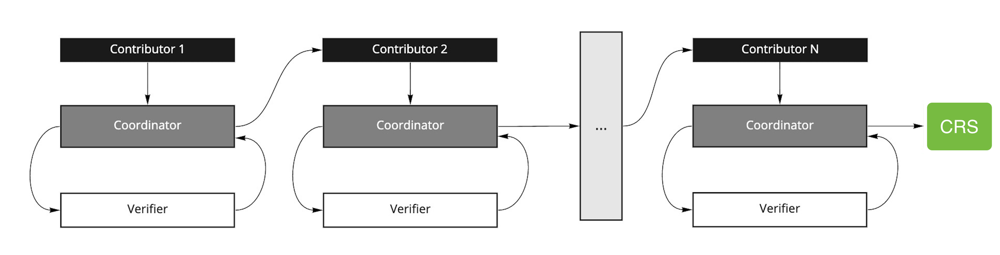

TRUSTED-SETUP-CEREMONY
| Field | Value |
|---|---|
| Name | Trusted Setup Ceremony |
| Slug | 207 |
| Status | raw |
| Category | Standards Track |
| Editor | Mehmet Gonen mehmet@logos.co |
| Contributors | Filip Dimitrijevic filip@logos.co |
Timeline
- 2026-07-03 —
709cf7f— Bedrock-RFC: Remove Concept of a Session (#365) - 2026-05-29 —
67e498e— chore: fix math issues (#350) - 2026-05-28 —
d45eed2— Chore: mirror blochain specs into github/mdbook (#347)
Revision History
| Version | Changes | Date |
|---|---|---|
| 1.0.0 | Initial revision. | 2025-09-04 |
| 1.0.1 | Renamed Nomos to Logos Blockchain. Removed mentions of DA. | 2026-04-23 |
Introduction
The Logos Blockchain utilizes zero-knowledge proof systems not only to ensure strong privacy and security guarantees across its decentralized architecture, but also to reduce the computational burden on validators by compressing execution into succinct proofs. Some of the Logos Blockchain's cryptographic applications specifically use Groth16 (see Common Cryptographic Components - Groth16 (zk-SNARK)), a proof system renowned for its succinctness and efficient verification.
A critical requirement of Groth16 is the secure generation of a Common Reference String (CRS) through a one-time cryptographic ceremony, commonly known as a Trusted Setup Ceremony. This ceremony ensures that cryptographic parameters are generated in a decentralized manner, such that no individual participant can later compromise the security or privacy guarantees of the system.
The Logos Blockchain adopts a secure, publicly verifiable, and auditable Multi-Party Computation (MPC) protocol known as Powers-of-Tau, performed over the BN254 elliptic curve as a first step for Groth16-based zero-knowledge proofs, to generate and extend these trusted setup parameters.
This document defines the cryptographic foundations and provides detailed instructions for securely performing or extending a trusted setup ceremony, including:
- Essential cryptographic definitions and parameters.
- Step-by-step guidance for participant contributions.
- Procedures for extending an existing Powers-of-Tau ceremony.
Overview
At a high level, the Powers-of-Tau ceremony generates a structured set of elliptic curve points corresponding to powers of a secret scalar . These elements form the Phase 1 CRS that underpins the Groth16 protocol in the Logos Blockchain. For Groth16, the CRS can be extended in a short Phase 2 MPC to derive circuit-specific proving and verification keys, ensuring the underlying secret remains hidden as long as at least one participant discards their randomness. The Logos Blockchain adopts an MPC setup ceremony: the Powers-of-Tau protocol.
Powers-of-Tau Ceremony Overview
- Each participant securely contributes randomness sequentially.
- Each participant iterates over the existing CRS parameters to update it.
- At least one participant must be honest and destroy their secret input to guarantee the security of ZK schemes using the CRS.
- All transformations are accompanied by publicly verifiable proofs, ensuring full auditability of the ceremony.

In the ceremony, a coordinator manages the sequential flow of contributions. Each contributor downloads the current CRS, applies their secret randomness, and sends the updated CRS back through the coordinator, who relays it to the next participant. At each step, an independent verifier can check that the update was performed correctly. Once all contributions are complete, the final CRS is published.
Security of Powers-of-Tau
Let N denote the total number of contributors participating in the ceremony. The Powers-of-Tau ceremony achieves computational soundness against adversaries that corrupt up to (N-1) participants, under certain number-theoretic assumptions (e.g., the q-Strong Diffie-Hellman (q-SDH) assumption in the underlying elliptic curve groups), provided that at least one honest participant successfully erases their secret randomness.
- Honest Participation: The core trust assumption is that at least one participant in the multi-party computation securely deletes their secret contribution (i.e., the toxic waste). If this holds, then the final CRS remains sound and cannot be used to forge proofs.
- Computational Assumptions: The protocol relies on several number-theoretic assumptions, most notably the q-SDH assumption over the elliptic curve. These assumptions are fundamental to pairing-based cryptography and are not specific to the ceremony.
- Erasure Assumption: Powers-of-Tau is typically analyzed in the secure erasure model, where each participant is assumed to be capable of permanently deleting their internal secret randomness after applying it. This ensures that even if an adversary later compromises a participant, they cannot recover the toxic waste. While not a computational assumption, secure erasure is essential for the soundness of the protocol in this model.
The security of Groth16-based zero-knowledge proofs in the Logos Blockchain critically depends on a sound and verifiable trusted setup. Each participant contributes to the CRS without revealing their secret randomness, and public proofs guarantee the correctness of every transformation. The procedure applies to all required secret scalars, , ensuring that all toxic waste is handled consistently and securely. Furthermore, the Logos Blockchain builds its Powers-of-Tau ceremony on top of an existing, already-audited CRS instead of starting from scratch, providing greater confidence in its security. This trusted setup process forms a foundational cryptographic pillar for ensuring privacy, integrity, and long-term resilience in the Logos architecture.
We have two phases for the ceremony. Phase 1 is circuit-independent and involves generating elliptic curve encodings of powers of a toxic waste scalar . This enables polynomial commitments up to a certain degree and can be reused across any circuit of bounded size. Phase 2 is circuit-specific and requires knowledge of the exact constraint system. It introduces four additional toxic waste scalars , which are used to encode the circuit's polynomials and, crucially, compute the elements in the verification key. These terms represent compressed combinations of public input polynomials and must be computed for each unique circuit. As a result, while Phase 1 can be performed once and reused broadly, Phase 2 must be securely executed for every new circuit.
Curve Selection and Parameter Structure
The Logos Blockchain uses the BN254 elliptic curve for Groth16-based zero-knowledge proofs because proving time and proof size are critical in these applications. BN254 offers smaller proofs and faster proving times compared to alternatives like BLS12-381, and is backed by mature, highly optimized libraries such as Circom, SnarkJS, and libsnark.
Groth16 Parameters
Groth16 proving systems derive two key components from a structured CRS:
- Proving Key (): This is a set of cryptographic parameters enabling the prover to generate proofs. Includes group elements from the prime-order cyclic subgroups and on elliptic curve, where is defined over a degree-2 extension field.
- Verification Key (): This is a smaller set of parameters allowing efficient verification of proofs. The verification key contains a much smaller set of elliptic curve elements from groups and .
Protocol
Technical and Cryptographic Steps
This section describes the trusted setup procedure in detail, outlining both the cryptographic computations and the interactive flow of the multi-party Powers-of-Tau protocol. The process begins with a coordinator initializing elliptic curve parameters and generating the initial set of structured CRS elements. Each participant builds on the previous one’s output by applying a secret random transformation and publishing a proof of correctness — so the process is sequential. As long as at least one participant discards their secret input, the entire setup remains secure. These contributions are chained together, and the ceremony concludes with a publicly verifiable aggregation of the final CRS.
The Groth16 protocol requires a CRS with a suite of powers of one random scalar . To ensure soundness and zero-knowledge for a given arithmetic circuit, four additional toxic-waste elements must also be sampled independently and uniformly at random. While their values are circuit-independent, the way they are applied in constructing the proving and verification keys depends on the specific circuit.
In addition to , the Groth16 proving system requires, for each circuit, four additional secret scalars, and all sampled independently and uniformly at random from the field . These values are essential for securely encoding different components of the constraint system and for ensuring zero-knowledge in the final proof. Specifically, and are used to randomize the circuit polynomials and , is used to compress linear combinations of public inputs, and provides blinding for the quotient polynomial that ensures witness-hiding. Like , each of these values must be treated as toxic waste and securely discarded after use. All five values: must be generated using the same secure procedure and structure. In Groth16 Phase 2, these scalars are used immediately to derive circuit-specific CRS elements, in particular the terms in the verification key, before all toxic waste is securely destroyed.
Step 1: Initialization (Coordinator)
The coordinator publicly specifies the foundational cryptographic parameters:
- Elliptic Curve: BN254: such that Here denotes distinct prime fields of size .
- Cryptographic Groups:
- : prime-order subgroups of elliptic curve points over and its extensions.
- : a bilinear, non-degenerate pairing function.
- Generators:
- are fixed public generators.
- Element Notation:
- Elements of the group are written additively by using the following notation: .
These values are fixed and published to all ceremony participants.
- An initialized CRS:
- The initialized CRS contains elements in and elements in . For the secret in Groth16, the value of defines the maximum degree of polynomials that will be committed and the maximum size of circuits (the number of R1CS constraints must be ≤ ) and . In contrast, the parameters of the Groth16 protocol each require only . But, Phase 2 also includes the computation of the elements in , whose number depends on the circuit’s public inputs. These must be generated at the same time, while the toxic waste scalars are still in memory.
- The CRS is of the form when initializing from scratch.
For performance reasons, especially to leverage Number Theoretic Transforms (NTT) for fast polynomial arithmetic, it is common to choose as a power of two. For example, setting allows working with polynomials of degree up to , and proving circuits with up to constraints.
Step 2: Participant Contribution
Each participant in the sequence performs the following:
- Downloads the current CRS: ( at the initialization phase).
- Generates a random secret scalar .
- Updates the CRS by contributing its secret into the CRS.
- .
- .
- Creates a proof showing they know , and that the CRS is a correct transformation of the old one.
- This proof consists of three checks (detailed in Step 4):
- Knowledge of exponent for the first element.
- Non-zero: ensuring previous contributions are not erased.
- Well-formedness of the updated CRS via random linear combination pairing check.
- This proof consists of three checks (detailed in Step 4):
- Submits:
- Updated parameters .
- Proof of correct transformation.
In Phase 2 for Groth16, participants also update all circuit-specific elements derived from the toxic waste scalars (including the terms), ensuring they are transformed consistently with the rest of the CRS.
Step 3: Public Verification
- Knowledge of Exponent
This is proven using a Fiat–Shamir transform of a Schnorr-like protocol:
- Let: .
- Prover samples random values uniformly .
- Computes: .
- Computes challenge: .
- Computes response: .
- Publishes proof .
- Verifier checks: . This protocol confirms that the first element of the CRS was exponentiated with a known secret .
- Well-Formedness of CRS
- Verifier samples .
- The verifier computes the following pairing equation on the new CRS:
This pairing check confirms that the CRS has been updated via exponentiation by the same secret scalar , preserving the structure of the powers of .
- Non-Erasing Contribution
- Checks that : .
- ’s verification (Phase2 only)
For each public , check the pairing equation:
- Left side encodes the division by (respectively for private inputs).
- Right side encodes the linear combination .
- If it holds for all , the are correct and consistent with the same for public inputs (respectively for private inputs).
Step 4: Toxic Waste Destruction
While each participant is expected to delete their secret scalar immediately after contribution, security is guaranteed as long as at least one participant successfully deletes their randomness.
Finalized CRS
Once all participants have contributed:
- The final CRS is published ( being the number of participants).
- This CRS is used to derive:
- Circuit-specific proving keys .
- Circuit-specific verification keys .
Extending an Existing Trusted Setup Ceremony
Logos may choose to leverage an existing, publicly verified Powers-of-Tau ceremony to inherit trust and security. To do this, Logos simply adds additional participants following the above participant contribution steps (Step 2):
- Logos participants securely download existing Powers-of-Tau parameters.
- Each Logos participant sequentially adds their randomness and generates proofs-of-knowledge, updating the parameters.
- After all Logos contributions, a new final set of parameters is derived.
- A Logos coordinator aggregates the auditable contributions to compute the new CRS parameters and publish them for Logos.
By following this protocol, Logos ensures robust security guarantees without repeating the entire ceremony from scratch. Most importantly, this process allows Logos to onboard previous contributions from external parties, inheriting their randomness and strengthening the trust assumption. It also preserves the transparency, integrity, and auditability of the original ceremony while enhancing its security by contributing additional entropy from Logos’ own participants, effectively extending a trusted foundation with new safeguards.
References
- [Groth16] IACR Cryptology ePrint ArchiveOn the Size of Pairing-based Non-interactive Arguments, Jens Groth, Eurocrypt 2016
- [WCB25] IACR Cryptology ePrint ArchiveSoK: Trusted setups for powers-of-tau strings, Faxing Wang, Shaanan Cohney, Joseph Bonneau, FC 2025
Annex
# Pseudocode for Multi-Party Powers-of-Tau Ceremony
# Input:
# - n: Max degree of polynomials to support (e.g., #constraints in Groth16)
# - m: Usually 1
# - G1, G2: Elliptic curve generators for groups G1 and G2
# - p: Prime order of the field F_p
# Output:
# - crs: Common Reference String with structured powers of tau
# - transcript: List of contributions and public proofs
# Assume Point is a placeholder for an elliptic curve point class
Point = object
Scalar = int
@dataclass
class ContributionProof:
z_point: Point
s: Scalar
def initialize_crs(n: int, m: int, G1: Point, G2: Point):
crs_G1 = [(1 ** j) * G1 for j in range(n)] # [1]_1, [1]_1, ..., [1]_1
crs_G2 = [(1 ** k) * G2 for k in range(m)] # [1]_2, [1]_2
return crs_G1, crs_G2
def contribute(
crs_G1: list[Point],
crs_G2: list[Point],
G1: Point,
G2: Point,
p: int):
r: Scalar = random_non_zero_scalar(p) # secret toxic waste scalar. 254-bit for BN254 and 255-bit for BLS12-381
# Apply exponentiation to CRS
crs_G1_prime = [(r ** j) * crs_G1[j] for j in range(len(crs_G1))]
crs_G2_prime = [(r ** k) * crs_G2[k] for k in range(len(crs_G2))]
# Generate proof of correct exponentiation
proof = generate_proof_of_knowledge(crs_G1[1], crs_G1_prime[1], r, G1, p)
# Destroy r securely
del r
return crs_G1_prime, crs_G2_prime, proof
def generate_proof_of_knowledge(
old_point: Point,
new_point: Point,
r: Scalar,
G: Point,
p: int):
z: Scalar = random_non_zero_scalar(p)
z_point = z * G
# Schnorr-style proof with Fiat–Shamir challenge
h: Scalar = hash_to_scalar(old_point, new_point, z_point)
s: Scalar = (z + h * r) % p
return ContributionProof(z_point, s)
def verify_contribution(
old_crs_G1: list[Point],
old_crs_G2: list[Point],
new_crs_G1: list[Point],
new_crs_G2: list[Point],
proof: ContributionProof,
G1: Point,
G2: Point,
p: int):
z_point, s = proof.z_point, proof.s
h = hash_to_scalar(old_crs_G1[1], new_crs_G1[1], z_point)
lhs = s * G1
rhs = z_point + h * new_crs_G1[1]
if lhs != rhs:
return False
rho_one = random_non_zero_scalar(p)
rho_two = random_non_zero_scalar(p)
lhs = pairing(
sum([(rho_one ** j) * new_crs_G1[j] for j in range(len(new_crs_G1))]),
(1 * old_crs_G2[0]) + sum([(rho_two ** k) * old_crs_G2[k] for k in range(len(old_crs_G2))])
)
rhs = pairing(
(1 * old_crs_G1[0]) + sum([(rho_one ** j) * old_crs_G1[j] for j in range(len(old_crs_G1))]),
sum([(rho_two ** k) * new_crs_G2[k] for k in range(len(new_crs_G2))])
)
return lhs == rhs
def powers_of_tau_ceremony(
participants: list[object], # Should ideally be a class/interface with contribute()
n: int,
m: int,
G1: Point,
G2: Point,
p: int):
crs_G1, crs_G2 = initialize_crs(n, m, G1, G2)
transcript: list[ContributionProof] = []
for participant in participants:
crs_G1_new, crs_G2_new, proof = participant.contribute(crs_G1, crs_G2, G1, G2, p)
if not verify_contribution(crs_G1, crs_G2, crs_G1_new, crs_G2_new, proof, G1, G2, p):
raise ValueError("Invalid contribution by participant")
transcript.append(proof)
crs_G1, crs_G2 = crs_G1_new, crs_G2_new
return crs_G1, crs_G2, transcript